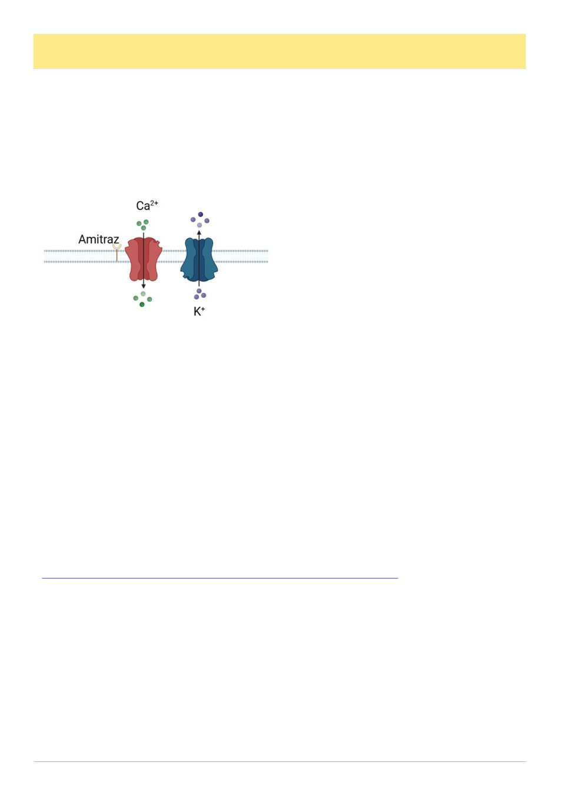

May 2026
29
Resistance Reverberates
By Andrew Wootton
Once again, we are faced with unwelcome news - amitraz resistant mites have been found in Australia.1 Perhaps
even more alarming is that AHBIC states that these are genetically distinct from the original mite incursion, confirm-
ing a second breach of our (once vaunted, now porous) biosecurity border. How long until deformed wing virus ar-
rives? Or Tropilaelaps!
Amitraz acts as an agonist for the octopamine receptor, meaning it binds to the receptor,2 mimicking the neuro-
transmitter, triggering overexcitation leading to hyperactivity and paralysis in varroa mites. Three mutations result-
ing in amino acid substitutions in the receptor have been found, N87S in France, Y215H in the United States and
F290L in Spain.3 The Australian incursion is with the USA mutation.
Fig 1. Octopamine β-Receptor showing binding of amitraz
leading to influx of calcium ions and outflow of potassium
ions (Adapted and redrawn from Waldman4).
We now have resistance in Australia to both permitted
“hard” chemical miticide groups, the pyrethroids
(Bayvarol and Apistan) and amitraz (Apivar and Apitraz).
Although currently thought to be restricted in distribution
to limited areas of Northern NSW and Queensland, we
should expect the almond pollination event this August to
result in widespread dissemination soon afterwards.
What are the implications for we poor beekeepers? The
best shots in our locker (>95% efficacy) may become largely ineffective. Fortunately, organic treatments show no
sign of leading to resistance. Indeed, a study with oxalic acid using 64 consecutive treatments did not lead to a re-
duction in susceptibility.5 We need to treat early and often with oxalic and formic acids. The restrictions currently
imposed through their labels, to their use only once or twice a year make no sense. I have been very reluctant to be
critical of the APVMA and their permit determinations but change now becomes urgent. We need legally to be able
to use best practice.
We must try our best to keep the hard chemicals in reserve, for use only in extremis. Rotation of treatments with
different modes of action is critical. However, even this may be of limited use due to the low fitness cost to the mite
of resistance.6 Furthermore, reversion to susceptibility is disappointingly slow, with the suggestion that it may take
4-6 years in the case of fluvalinate.7 We can hope for new developments with synergistic chemicals that enhance the
toxicity of amitraz8 but this will likely take years.
Organic acids, integrated pest management strategies such as drone comb removal and queen caging and restrict-
ed use of rotated hard chemicals are what we have. It‟s going to be a rocky road over the next couple of years, but
let‟s not forget that the rest of the world has coped. So too can we.
Andrew Wootton is Vice President of the VAA and a certified master beekeeper with the Eastern Apicultural Society
of N America. He first started beekeeping in the 1960s.
References
1 https://honeybee.org.au/ahbic-biosecurity-update-resistant-varroa-mite-23-april-2026/
2 Wootton, A., 2025. Resisting Resistance. Australian Bee Journal, 106 (12), 12-13.
3 Bertola, M. and Mutinelli, F., 2025. Sensitivity and Resistance of Parasitic Mites (Varroa destructor, Tropilaelaps
spp. and Acarapis woodi) Against Amitraz and Amitraz-Based Product Treatment: A Systematic Review. Insects, 16
(3), p.234.
4 Waldman, J., Klafke, G.M., Tirloni, L., Logullo, C. and da Silva Vaz Jr, I., 2023. Putative target sites in synganglion
for novel ixodid tick control strategies. Ticks and tick-borne diseases, 14(3), p.102123.
5 Maggi, M.D., Damiani, N., Ruffinengo, S.R., Brasesco, M.C., Szawarski, N., Mitton, G.A., Mariani, F., Sammata-
ro, D., Quintana, S. and Eguaras, M.J., 2016. The susceptibility of Varroa destructor against oxalic acid: a study case.
6 Martin, S.J., Elzen, P.J. and Rubink, W.R., 2002. Effect of acaricide resistance on reproductive ability of the honey
bee mite Varroa destructor. Experimental & applied acarology, 27(3), pp.195-207.
7 Milani, N. and Della Vedova, G., 2002. Decline in the proportion of mites resistant to fluvalinate in a population of
Varroa destructor not treated with pyrethroids. Apidologie, 33(4), pp.417-422.
8 Fine, J.D., Truong, T.T., Lucadello, M.C., Litsey, E.M., Lamas, Z., Rinkevich, F. and Nicklisch, S.C., 2026. Ami-
traz toxicity in resistant Varroa mites can be increased by inhibiting ABC efflux transporters. Journal of Apicultural
Research, pp.1-12.